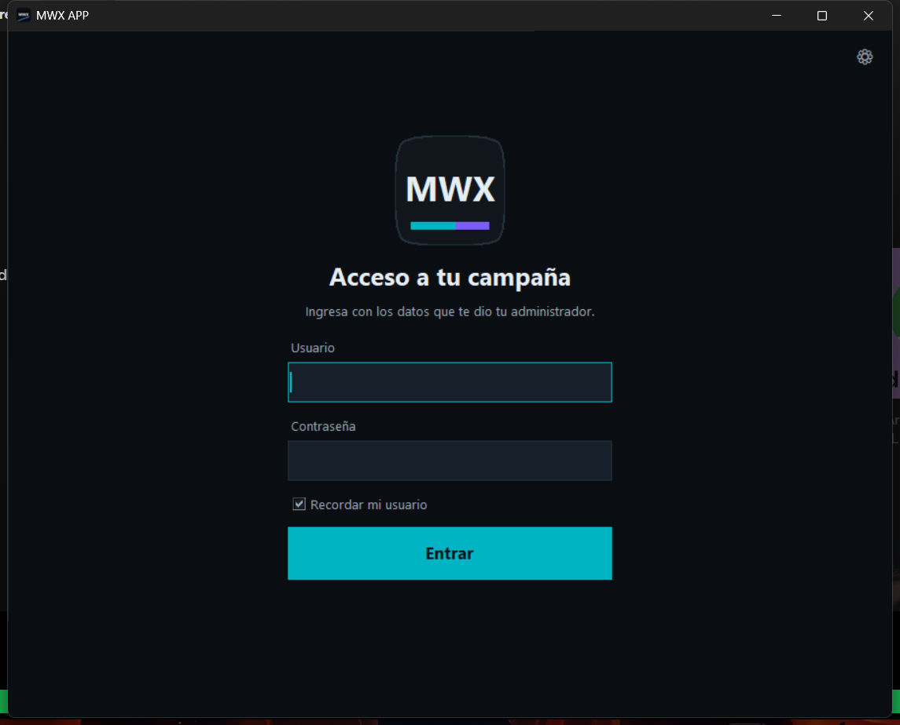
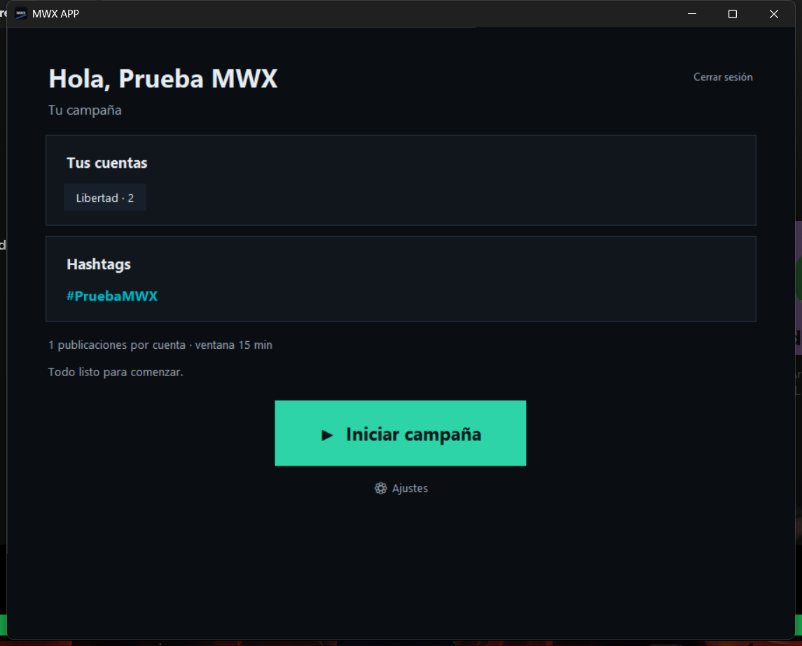

Lectura recomendada
Si eres el administrador, lee las secciones 1 a 4 y la 6. Si eres usuario final, con la sección 5 es suficiente.
1
Qué es MWX APP
Una herramienta de campañas locales con cuentas de X asignadas por persona.
MWX APP tiene dos piezas que trabajan juntas: un panel central que usa el administrador y una aplicación de escritorio que se instala en la computadora de cada persona. El panel decide qué se publica y con qué cuentas; la aplicación de escritorio hace el trabajo real en la máquina del usuario.
🖥️
Panel del administrador
Está en https://mwx.app. Ahí creas usuarios, asignas cuentas, escribes el hashtag y el contexto, subes imágenes, defines límites y revocas accesos.
No publica nada por sí solo. Es el centro de control.
⚡
Aplicación MWX APP
Es el archivo MWX APP.exe que se entrega a cada persona. Abre Chrome en su computadora, entra con sus cuentas y publica desde su propia conexión a internet.
Solo descarga las cuentas que le asignaste.
La regla de oro
El servidor no abre Chrome ni publica. Solo guarda usuarios, cuentas y configuración, y entrega la inteligencia artificial. La publicación ocurre en la computadora de cada persona, con su IP y sus recursos.
Qué puede hacer
Publicar posts originales con hashtag obligatorio en medio del texto e imagen opcional.
Retweets con cita de tweets ancla, con texto distinto por cuenta.
Cambiar de cuenta en el mismo Chrome, sin cerrar el navegador entre una cuenta y otra.
Generar textos con IA respetando el registro y la personalidad de cada cuenta.
Respetar límites de acciones por cuenta, pausas, ventana de tiempo y tope diario.
Mostrar progreso en vivo, detenerse con un botón y entregar un resumen con enlaces.
1ejecutable por persona
Ncuentas asignadas
4secciones posibles
0claves de IA en el .exe
2
Cómo funciona
El recorrido de una campaña, desde tu panel hasta X.
TÚDashboard mwx.app
→
ServidorSupabase + API Railway
→
PC de la personaMWX APP.exe + Chrome
→
Xpublica desde su IP
Las tres capas
1. Base de datos central (Supabase)
Guarda los usuarios de MWX APP, las cuentas que tiene cada uno, la configuración de su campaña, las imágenes y el historial de accesos. Es la fuente de verdad.
2. API central (Railway)
Es la puerta segura entre el .exe y la base de datos. Valida el usuario y la contraseña, entrega solo las cuentas asignadas, sirve las imágenes y hace de puente con OpenAI para que la clave de la IA nunca viaje al cliente.
3. Aplicación de escritorio (la PC de la persona)
Recibe su perfil, guarda una copia local, abre Chrome y ejecuta la campaña. Todo el trabajo pesado ocurre aquí: CPU, memoria, internet e IP de esa persona.
Ventaja del modo local
Cada persona publica desde su propia red. No comparten la IP del servidor y el trabajo se reparte entre las computadoras. El servidor solo coordina.
Qué viaja y qué no
Dato
¿Viaja al .exe?
Explicación
Usuario y contraseña de MWX APP
Sí, al iniciar sesión
Se validan contra la API por HTTPS.
Cuentas asignadas (con sus cookies)
Sí, solo las suyas
Se guardan en la SQLite local para que Chrome pueda entrar.
Hashtag, contexto, URLs e imágenes
Sí, como configuración
El usuario no necesita escribirlos.
Clave real de OpenAI
No
Se queda en el servidor; el .exe usa un token temporal contra la API.
Cuentas de otras personas
No
La API solo devuelve las asignadas a ese usuario.
Contraseña del panel admin
No
El .exe no administra usuarios ni campañas.
3
Flujo completo
De la configuración en el panel hasta la publicación en X.
Tú configuras en el panel Entras a mwx.app, creas el usuario, le asignas sus cuentas y defines hashtag, contexto, URLs, imágenes y límites.
Entregas el ejecutable Le envías la carpeta o el ZIP de MWX APP junto con su usuario y contraseña. El .exe ya incluye la URL del servidor en config.json.
La persona abre la app e inicia sesión La API valida sus credenciales y le devuelve únicamente su perfil: sus cuentas y su campaña.
El .exe sincroniza sus cuentas Las guarda en la base local de su PC y desactiva cualquier cuenta que no le pertenezca.
La persona pulsa “Iniciar campaña” No tiene que escribir nada más. La app abre Chrome visible en su computadora.
La IA genera los textos El .exe pide los textos a la API, que usa la clave real de OpenAI. Si la IA falla, el .exe genera variaciones locales para no detenerse.
Se publica en X La app entra con cada cuenta, publica el post o el RT con cita, cambia de cuenta en el mismo Chrome y repite según el plan.
La persona ve el resumen Al terminar, la app muestra métricas y los enlaces de las publicaciones. Tú puedes revocar o cambiar la configuración para la próxima.
Importante
Si la computadora se apaga, se cierra la app o se queda sin internet, la campaña se detiene. El servidor no puede continuarla por su cuenta.
4
Manual del administrador
Todo lo que necesitas para dar acceso y configurar campañas.
4.1 Acceso al panel
Abre el dashboard Entra a https://mwx.app desde cualquier navegador.
Inicia sesión como admin Usa tu usuario administrador del dashboard. No es el mismo usuario de MWX APP que usa la persona final.
Entra a la operación correcta Ve a 📊 Datos y cuentas → 📲 MWX APP: Usuarios y Acceso Esta operación solo la ve el rol admin.
Seguridad
Cambia la contraseña por defecto del dashboard antes de exponerlo. No compartas tu usuario admin con las personas que usan el .exe.
4.2 Crear usuarios
En la pestaña 👥 Usuarios:
Usuario: minúsculas, de 3 a 20 caracteres (juan, maria.lopez).
Nombre visible: el saludo que verá la persona en la app.
Contraseña: mínimo 8 caracteres. Se guarda cifrada con PBKDF2; nadie puede leerla desde el panel.
Activo: si lo desactivas, no podrá iniciar sesión.
También puedes resetear la contraseña, revocar sesiones y eliminar al usuario (con confirmación).
4.3 Asignar cuentas
En la pestaña 🔗 Asignar cuentas eliges al usuario y marcas sus cuentas de X.
Puedes mezclar varias secciones: Libertad, Ciudadanía, Institución Privada, Justicia.
Filtra por búsqueda, sección, tier o “solo con sesión”.
El resumen te dice cuántas cuentas y de qué secciones quedaron.
Si una cuenta no tiene sesión válida, la app no podrá publicar con ella; el panel te avisa.
El atajo “Asignar todas las de la sección” acelera el trabajo.
La persona solo verá estas cuentas
La API filtra por usuario. Aunque la base tenga 200 cuentas, su .exe solo descarga las que le asignaste. Si le quitas una, se desactiva en su PC en el siguiente inicio de sesión.
4.4 Configurar la campaña
En la pestaña ⚙️ Campaña defines lo que usará el .exe de esa persona.
Campo
Qué hace
Recomendación
Hashtags
1 a 6 etiquetas. Se garantiza que salgan en medio del texto, nunca al final.
Usa el hashtag exacto que quieres posicionar.
Contexto / tema
De qué debe hablar la IA. Es el tema que tú defines.
Una o dos frases claras; evita copiar noticias literales.
Narrativa / trasfondo
Noticias o información de fondo invisible. La IA la usa como referencia pero tiene prohibido mencionarla.
Úsala si quieres que la IA “sepa” el contexto sin citarlo.
URLs ancla
Tweets que se van a citar o retuitear. Si está vacío, solo hace posts originales.
2 a 5 URLs para no parecer spam.
Texto base de la cita
Idea base para los RT con cita; la IA la parafrasea distinto en cada cuenta.
Una idea corta, no un texto final.
Acciones por cuenta
Cuántas acciones hace cada cuenta en la corrida (1 a 49).
Empieza bajo (1 a 5) y sube gradualmente.
Pausa entre acciones
Segundos entre una acción y otra de la misma cuenta.
5 a 30 segundos para cuentas nuevas.
Duración
Ventana máxima de la campaña en minutos.
15 a 60 minutos para una corrida normal.
Límite diario
Tope de acciones exitosas por cuenta en 24 h.
49 por defecto; baja para cuentas nuevas.
Imágenes
Se suben aquí; el .exe las descarga y cada publicación lleva una al azar.
Usa imágenes ligeras y revisa que se vean bien.
Permitir ajustes
Si está apagado, la persona solo pulsa Iniciar. Si lo enciendes, puede ajustar acciones, pausa, ventana e imágenes; nunca el hashtag, contexto ni URLs.
Déjalo apagado para usuarios no técnicos.
Cómo se generan los textos
La IA escribe un texto distinto por cuenta y acción, respetando el registro de cada cuenta (política, activista o ciudadana) y su perfil (formal, ciudadano o popular). El hashtag se inserta en medio. En la app local los textos pueden llegar a 280 caracteres (el límite de X).
4.5 Entregar el ejecutable
El paquete que se entrega es la carpeta MWX APP (o el ZIP) que contiene:
MWX APP\
├── MWX APP.exe ← la aplicación
├── config.json ← URL del servidor (no tocar)
├── LEEME.txt ← instrucciones para la persona
└── _internal\ ← dependencias internas (no borrar)
No muevas solo el .exe
La aplicación necesita la carpeta _internal y el archivo config.json junto a ella. Entrega la carpeta completa o el ZIP.
Entrega también, por un canal privado, el usuario y la contraseña de esa persona. No incluyas credenciales dentro del ZIP ni en el mismo mensaje del ejecutable si puedes evitarlo.
4.6 Actualizar y revocar
Cambiar hashtag, contexto, cuentas o imágenes: guarda los cambios en el panel. La persona los recibe al volver a abrir la app o iniciar sesión. La app no se refresca sola mientras está abierta.
Una campaña en curso termina con la configuración con la que empezó; los cambios aplican a la siguiente corrida.
Revocar sesiones: incrementa la versión del token. El acceso deja de servir en el siguiente inicio de sesión o reconexión. Una campaña ya en curso no se detiene remotamente; para eso la persona debe pulsar Detener.
Desactivar usuario: impide nuevos inicios de sesión de inmediato.
Eliminar usuario: borra sus asignaciones y configuración (con confirmación).
4.7 Buenas prácticas
Prueba primero con 1 cuenta y 1 acción antes de lanzar una campaña grande.
Usa 2 a 5 tweets ancla; una sola URL con muchos comentarios puede parecer spam.
No satures cuentas nuevas: sube las acciones y el límite diario poco a poco.
Verifica que las cuentas tengan sesión válida antes de asignarlas.
Revisa la pestaña 📊 Actividad / Seguridad para ver accesos y eventos.
Mantén el dashboard con una contraseña fuerte y no compartas tu usuario admin.
No entregues la carpeta data/ del servidor ni la base de datos.
Checklist rápido del administrador
Usuario creado, activo y con contraseña entregada.
Cuentas asignadas y con sesión válida.
Hashtag, contexto, URLs e imágenes configurados.
Acciones, pausa, ventana y límite diario definidos.
Prueba de 1 cuenta y 1 publicación realizada.
5
Manual del usuario final
Guía sencilla para la persona que usa MWX APP en su computadora.
5.1 Requisitos
Requisito
Detalle
Sistema
Windows 10 u 11, 64 bits.
Navegador
Google Chrome instalado (la app lo usa para publicar).
Internet
Necesario para entrar y para generar los textos. La campaña usa la conexión de la persona.
Espacio
La carpeta de la app pesa aproximadamente 63 MB.
Credenciales
Usuario y contraseña entregados por el administrador.
5.2 Abrir la aplicación
Descomprime la carpeta Si recibiste un ZIP, extráelo completo. No ejecutes el .exe desde dentro del ZIP.
Abre “MWX APP.exe” Haz doble clic. La primera vez puede tardar unos segundos en preparar Chrome.
Si Windows muestra un aviso azul Pulsa Más información y luego Ejecutar de todas formas. El .exe aún no está firmado digitalmente.
5.3 Iniciar sesión

Pantalla de acceso. Escribe el usuario y la contraseña que te entregó el administrador.
Escribe tu usuario.
Escribe tu contraseña.
Pulsa Entrar o presiona Enter.
Si marcas “Recordar mi usuario”, la próxima vez solo tendrás que escribir la contraseña.
Si no puedes entrar
Revisa tu conexión a internet y que hayas escrito exactamente el usuario y la contraseña. Si el problema continúa, contacta a tu administrador.
5.4 Pantalla “Tu campaña”

Pantalla “Tu campaña”: cuentas asignadas, hashtags, acciones y botón para iniciar.
Antes de empezar, revisa:
Tus cuentas: aparecen agrupadas por sección. Si falta alguna, avisa a tu administrador.
Hashtags: los definió tu administrador; no necesitas escribirlos.
Publicaciones por cuenta y ventana: indican cuánto trabajo hará la app y en cuánto tiempo.
Estado: debe decir “Todo listo para comenzar”.
5.5 Iniciar la campaña
Pulsa “▶ Iniciar campaña” Se abrirá Chrome en tu computadora y empezará a publicar con tus cuentas.
No cierres la app ni Chrome La campaña corre en tu computadora. Si cierras la ventana, se detiene.
Mira el progreso Verás una barra, el número de publicaciones y los últimos eventos.
No apagues la computadora
La campaña no se ejecuta en el servidor: se ejecuta en tu equipo. Si se apaga, se suspende o se queda sin internet, la campaña se detiene.
5.6 Detener la campaña
Si necesitas parar antes de que termine, pulsa ⛔ Detener y confirma. La app termina la acción que esté en curso y se detiene; las acciones que faltaban no se hacen.
5.7 Resultados y enlaces
Al terminar verás un resumen con:
Publicaciones exitosas, fallidas y omitidas.
Una tabla con el usuario, el tipo y el enlace de cada publicación.
Botones para copiar los enlaces y volver a iniciar o cerrar sesión.
Si alguna fila dice “link no capturado”, la publicación sí se hizo pero X no devolvió el enlace a tiempo.
Consejos para una campaña estable
Mantén la computadora despierta y la app abierta durante la campaña.
No lances dos campañas a la vez en la misma computadora.
Usa entre 2 y 5 tweets ancla para no parecer spam.
Revisa los enlaces del resumen al terminar.
Si una cuenta falla, avisa a tu administrador para renovar su sesión.
5.8 Problemas comunes
Síntoma
Causa probable
Qué hacer
“Usuario o contraseña incorrectos”
Datos mal escritos o usuario desactivado.
Revisa mayúsculas y espacios; pide ayuda a tu administrador.
“No hay conexión con el servidor”
Sin internet o servidor no disponible.
Revisa tu conexión y vuelve a intentar.
“Tu sesión expiró”
El token de acceso venció o fue revocado.
Vuelve a iniciar sesión con tu usuario y contraseña.
Windows muestra un aviso azul
El .exe no está firmado.
Más información → Ejecutar de todas formas.
No abre Chrome
Chrome no está instalado o está dañado.
Instala Google Chrome y vuelve a intentar.
“No tienes cuentas asignadas”
El administrador aún no te asignó cuentas.
Contacta a tu administrador.
La campaña se detuvo sola
Se cerró la app, se apagó la PC o falló la red.
Vuelve a abrir la app e inicia de nuevo.
Algunas cuentas fallan
Sesión de X vencida o cuenta limitada.
La app las omite; pide al administrador que renueve la sesión.
5.9 Lista de verificación
Tengo Chrome instalado y actualizado.
Tengo conexión a internet.
Descomprimí la carpeta completa y no moví solo el .exe.
Escribí mi usuario y contraseña correctamente.
Veo mis cuentas y el hashtag en la pantalla “Tu campaña”.
No cerraré la app mientras la campaña esté en curso.
Sé que puedo detenerla con el botón Detener.
6
Preguntas frecuentes
Las dudas más comunes del administrador y del usuario.
¿Yo como admin les mando el hashtag y el contexto?
Sí. Los escribes en la pestaña ⚙️ Campaña de cada usuario. La persona no los escribe: su .exe los recibe al iniciar sesión. No puedes cambiar el hashtag desde la app del usuario; solo tú desde el panel.
¿Dónde se ejecuta realmente la campaña?
En la computadora de la persona. El .exe abre Chrome en ese equipo y publica desde su IP. El servidor solo guarda datos, valida el acceso y presta la IA.
¿Puedo iniciar la campaña a distancia desde el panel?
No. La persona debe abrir la app y pulsar Iniciar campaña en su computadora. El panel sirve para configurar y revocar, no para lanzar el navegador de otra persona.
¿La persona puede cambiar el hashtag o el contexto?
No. Aunque actives “Permitir ajustes”, solo puede ajustar acciones, pausa, ventana e imágenes. El hashtag, contexto, URLs y texto base siempre vienen del servidor.
¿Cuándo ve la persona los cambios que hago?
La próxima vez que abra la app o vuelva a iniciar sesión. La app no se refresca sola mientras está abierta. Una campaña en curso termina con la configuración anterior.
¿Puedo revocar el acceso a una persona?
Sí. En 📊 Actividad / Seguridad usa Revocar sesiones o desactiva al usuario. El token dura 12 horas; al reabrir la app, la persona ya no podrá entrar. Una campaña en curso no se detiene remotamente: para eso debe pulsar Detener.
¿Cuántas cuentas puede tener una persona?
Todas las que le asignes, y pueden ser de varias secciones a la vez (Libertad, Ciudadanía, IP, Justicia). El .exe solo descarga las suyas.
¿La clave de OpenAI está dentro del .exe?
No. La clave real se queda en el servidor. El .exe usa un token temporal contra la API, y la API es la que habla con OpenAI.
¿Necesita VPN o proxy?
No. El modo local está diseñado para salir con la IP de la persona, sin proxies. Eso reparte las publicaciones entre distintas redes.
¿Funciona en Mac o Linux?
La versión actual es solo para Windows 10/11 de 64 bits. Requiere Google Chrome instalado.
¿Qué pasa si la persona cierra la app?
La campaña se detiene. El progreso y los enlaces quedan en el resumen de esa corrida. Puede volver a abrirla e iniciar de nuevo.
¿Dónde se guardan los datos en la PC?
En %LOCALAPPDATA%\MWX APP. Ahí viven la base local, las cookies de las cuentas asignadas y los registros. Si varias personas comparten la misma cuenta de Windows, conviene usar cuentas de Windows separadas.
7
Límites y recomendaciones
Para que las campañas sean estables y las cuentas duren.
Tema
Qué debes saber
Una PC por persona
La campaña usa el Chrome, la CPU y la IP de esa persona. Si la PC está apagada, no hay campaña.
Tope diario
Por defecto 49 acciones exitosas por cuenta en 24 h. Cuenta también lo hecho en otras corridas. Bájalo para cuentas nuevas.
Anti-spam
Usa 2 a 5 tweets ancla, pausas de 5 a 30 s y no dispares muchas cuentas nuevas al mismo tiempo.
Textos
La app local permite hasta 280 caracteres; las campañas masivas del dashboard usan 100. El hashtag siempre va en medio.
Imágenes
Si configuras imágenes, cada publicación lleva una al azar. Se descargan desde el servidor a la PC.
Configuración
Los cambios se aplican al reabrir la app, no en caliente. Una campaña en curso no cambia a mitad de camino.
Reporte central
El panel muestra accesos y eventos de campaña, no cada tweet. Los enlaces completos se ven en el resumen de la PC.
Firma del .exe
No está firmado. SmartScreen puede advertir la primera vez. Se puede firmar con un certificado de code signing.
Actualizaciones
Para actualizar la app se entrega una carpeta nueva. Las cuentas y la configuración viven en el servidor, no en el .exe.
Prueba controlada
Antes de lanzar una campaña grande, haz una prueba con 1 cuenta y 1 publicación. Revisa que Chrome abra, que el texto salga bien y que el enlace aparezca en el resumen.
Mejoras que se pueden agregar
Copiar la configuración de campaña a varios usuarios a la vez, reporte central de enlaces publicados y un botón de paro remoto. Si las necesitas, se pueden implementar en una siguiente versión.
8
Soporte y control de versiones
Datos para mantener el sistema y pedir ayuda.
Datos del sistema
Elemento
Valor
Panel de administración
https://mwx.app
API del ejecutable
https://mwx-api-production.up.railway.app
Paquete del ejecutable
MWX-APP-2026-11-10.zip
Versión del manual
1.0 · Noviembre de 2026
Plataforma
Windows 10/11 · 64 bits · Google Chrome
Checklist de entrega al usuario
Usuario creado y activo en el panel.
Cuentas asignadas y con sesión válida.
Hashtags, contexto, URLs e imágenes configurados.
Acciones, pausa, ventana y límite diario definidos.
“Permitir ajustes” según el perfil de la persona.
Carpeta o ZIP de MWX APP entregado completo.
Usuario y contraseña enviados por un canal privado.
Prueba de 1 cuenta y 1 publicación realizada.
Soporte
Para dudas, cambios de cuentas o problemas de acceso, contacta al administrador del sistema. No compartas tu contraseña ni el contenido de la carpeta data del servidor.
Recuerda
El paquete del ejecutable no contiene la flota completa de cuentas ni la base de datos. La persona solo recibe las cuentas que le asignaste. Mantén el dashboard con una contraseña fuerte y revisa periódicamente la pestaña de actividad.
MWX APP · Manual de administración y guía del usuario · Noviembre de 2026